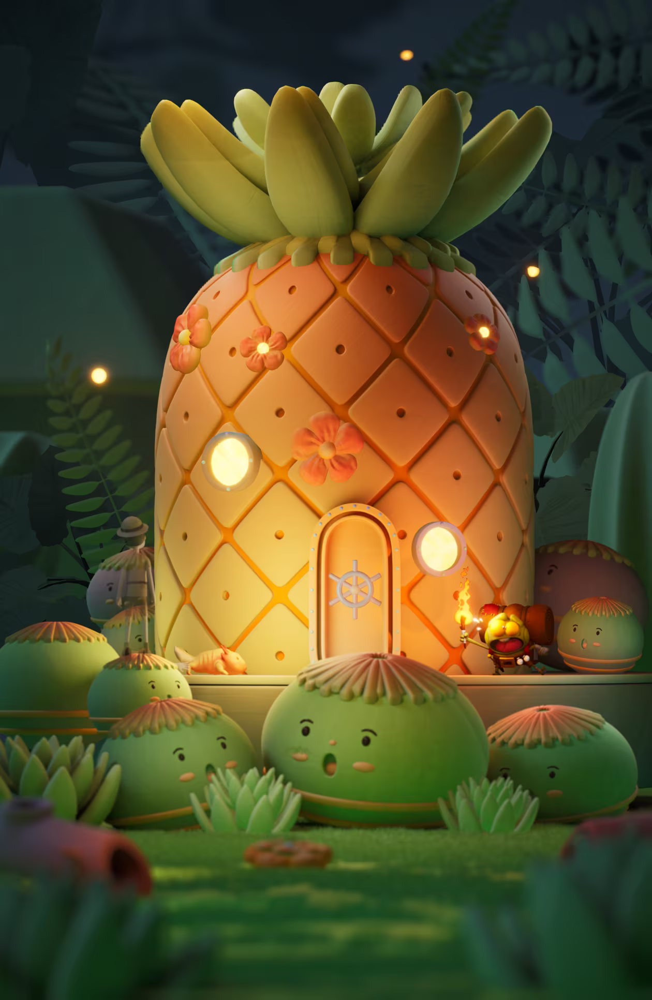
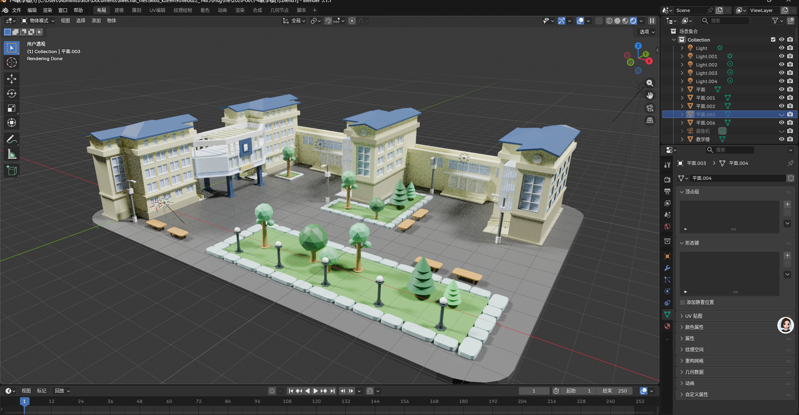
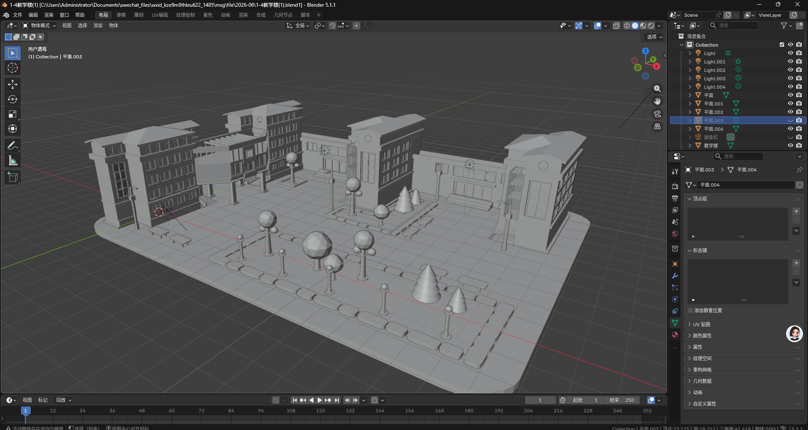

菠萝屋场景成品渲染
展示卡通风格场景的主体造型、灯光氛围、材质层次与整体完成度， 适合用于说明风格化场景资产的表现能力。
3D Modeling
展示模型轮廓、材质分区、灰模结构、场景组合和最终渲染效果， 重点体现从基础体块到完整场景资产呈现的制作意识。

展示卡通风格场景的主体造型、灯光氛围、材质层次与整体完成度， 适合用于说明风格化场景资产的表现能力。

展示建筑体块、广场铺装、绿化节点与场景小件的组合， 体现完整场景资产组织、比例控制和材质区分能力。

展示建筑、道路、景观与空间比例的灰模阶段， 用于说明从体块搭建到材质完善的制作流程。
本页用于展示建模作品从灰模结构、材质分区到最终渲染的完整呈现。